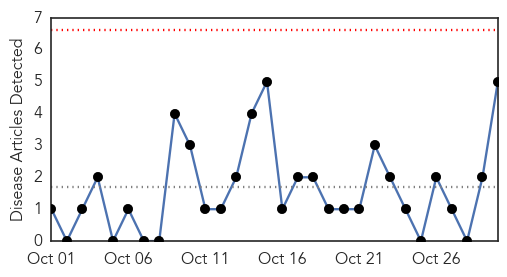
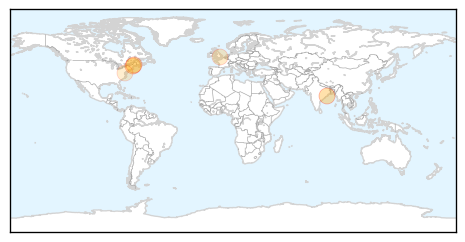
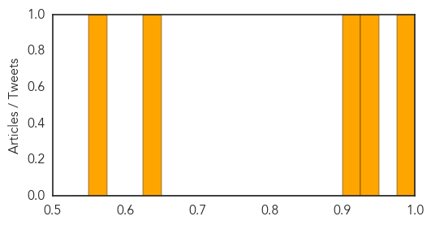
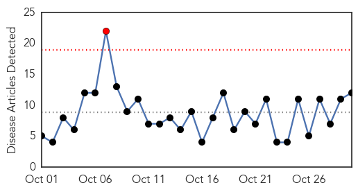
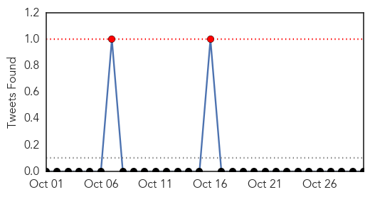
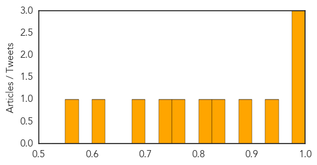

Hepatitis
30-Day Web Trend
0 alerts, 0 warnings

30-Day Twitter Trend
0 alerts, 0 warnings

Article Locations
Article Confidences
Top Articles:
- 0.983
- Hepatitis in Sambalpur
- 0.944
- Southern Maine restaurant worker may have exposed diners to hepatitis A — Health — Bangor Daily News — BDN Maine
- 0.915
- Maine CDC: Cumberland County restaurant worker had hepatitis A
- 0.648
- Avoiding sharps injuries: put prevention before cure
- 0.566
- If you ate at an unnamed Maine Restaurant you may be at risk for Hepatitis A
Top Tweets:
-
No tweets found for Oct 30, 2014
Dengue Fever
30-Day Web Trend
1 alerts, 0 warnings

30-Day Twitter Trend
2 alerts, 0 warnings

Article Locations

Article Confidences
Top Articles:
- 0.996
- Obama and the Safety of our Blood Supply
- 0.994
- Study stings Tamil Nadu govt data on dengue cases
- 0.992
- Dengue Fever Mosquito Spotted In California
- 0.936
- Mosquitoes breed near district hospital’s malaria unit
- 0.883
- 4 Bollywood celebs who suffered from deadly dengue
- 0.843
- UP minister calls doctors brokers now
- 0.819
- San Diego County, Navy Officials Looking For Mosquito Known To Cause Dengue Fever
- 0.758
- Dengue in Mumbai: South Mumbai reports over 500 cases in 30 days
- 0.738
- The Statesman: Paper-based test can quickly diagnose Ebola, dengue
- 0.697
- Dengue in Mumbai: Innovative ways to keep your home mosquito free
- 0.624
- Anti-dengue activities
- 0.551
- Combatting polio: Dahar promises change within six months
Top Tweets:
-
No tweets found for Oct 30, 2014